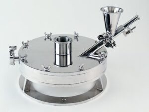

Fluid Energy Mill Overview
Jet milling or fluid-energy grinding via a spiral jet mill is a common method of comminution or pulverizing granular material into a fine powder with a narrow size distribution.
The spiral jet mill, also called a pancake mill, is shown in the drawing to the left. This design was first described by NH Andrews in 1936 (US2032827)1. Several nozzles are placed in the outer perimeter of the mill through which the grinding medium, gas or steam, enters.
The solid particles are introduced into the grinding chamber through a venturi feed injector. The outlet is placed in the center of the mill chamber. Grinding and static classification both occur within the cylindrical chamber. The vortex formed by the jets causes coarse particles within the mill to be transferred to the outer zone, as fines exit through the central outlet.
The Micro-Jet pancake mill is a horizontally oriented jet mill for most applications but the orientation can be adjusted for space and processing considerations. Spiral jet mills, like the Fluid Energy Micro-Jet, are notable for their robust design and compactness. Their direct air operation avoids the need for separate drive units. Capable of grinding dry powders to 0.5-45-micron averages, this mill generates a maximum number of “fines” resulting in high surface areas in the final product.2 As with all Fluid Energy jet mills, the grinding process occurs with no heat buildup when using ambient gases.
A few case studies of the Micro-Jet spiral jet grinder are described below.
Pigment and Abrasives Grinding
The Model 42 Micro-Jet was made to grind a chemical intermediate to a 6-micron average, at a rate of 2 metric tons an hour.
The initial raw feed size was 325 mesh (~45 microns) material. This model also features replaceable silicon carbide liners for all product contact surfaces to provide maximum abrasion resistance. The mill utilizes 4,000 cfm of air compressed to 100 psi.
In a high-temperature configuration, the Model 42 Micro-Jet utilizes super-heated steam as the grinding fluid. Steam requirements range from 4,000-9,000 lbs/hr at 150 psig. The steam is typically super-heated from 550ºF (290ºC) to 1,000ºF (540ºC). These units have been designed for Titanium Dioxide (TiO2) applications producing a particle size of 0.5 microns at a rate of 4000 lbs/hr. The same unit has also been used for grinding red and yellow iron oxide pigments.
Polymer Grinding
The Model 24 Micro-Jet grinds fluoropolymers to a particle size range of 10-15 microns at a rate of 200-400 lbs/hr. The system is equipped with a feed impact chamber for reducing larger particles prior to entry into the mill.
The unit is constructed in type 304 stainless steel with replaceable nozzles and liners. Fluid Energy has ground many types of fluoropolymers including virgin and reprocessed grades.
Sanitary Micro-Jet and Pharmaceutical Production System
The Model 8 sanitary Micro-Jet meets USDA and pharmaceutical guidelines for cleaning and sterilization. This unit is equipped with FDA approved O-rings and gaskets.
All sanitary designs have mirror polish and provide easy access to product and gas contact areas for cleaning and sterilization. There are no threaded connections in product contact areas. Sanitary models can be made in sizes from Model 4 up to Model 24.
The Model 8 Micro-Jet System was designed to grind penicillin to less than a 10-micron average at a rate of 50 lbs/hr. This system is equipped with a cyclone for primary sterile collection and a baghouse for secondary product collection.

A HEPA filter with an exhaust fan was also included to provide maximum particulate capture of the system exhaust. All product contact areas are constructed in type 316 stainless steel with pharmaceutical polish and sanitary O-Rings. The system utilizes 100 scfm of air compressed to 100 psig.
Individual Micro-Jet systems may be tailored to optimize both the desired particle size and the production rate. The airflow rate, air pressure, and grinding pattern are easily adjusted by means of interchangeable grinding nozzles and liners. Abrasive, sticky, and contamination-sensitive products can all be processed by means of specialized Micro-Jet liners. Specialized liners include:
- Alumina
- Tungsten Carbide
- Silicon Carbide
- PTFE
- Urethane
- Polyethylene
These case studies are just a few examples of granular solids that can be jet-milled in a spiral or pancake mill. A list of additional product applications can be found here on the Micro-Jet equipment web page.
References:
1. Andrews, NH, 1936, Method of And Apparatus for Providing Material in Finely Divided Form, US2550390.
2. R.H. Perry and D.W. Green, Chemical Engineering Handbook, 8th Ed., 2007, p. 21-61.